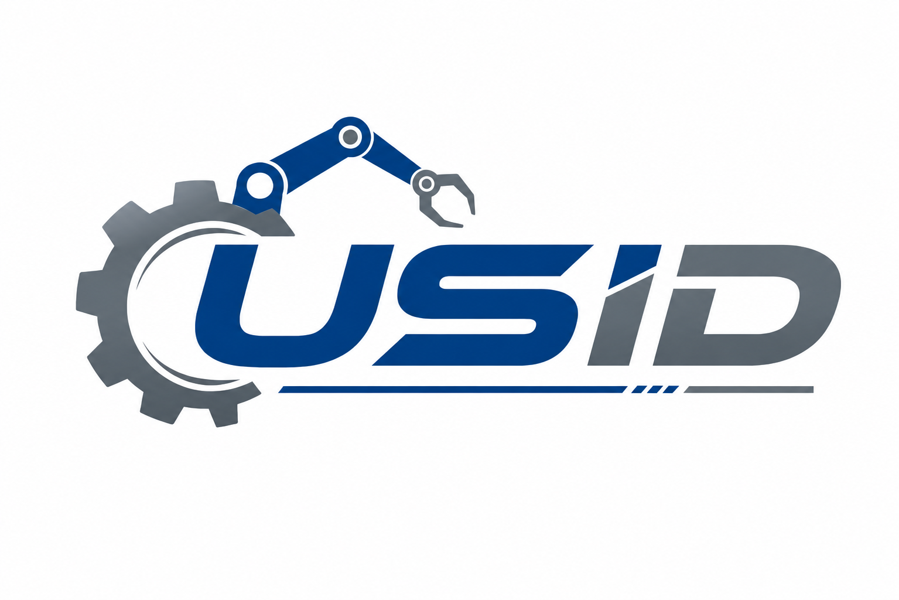
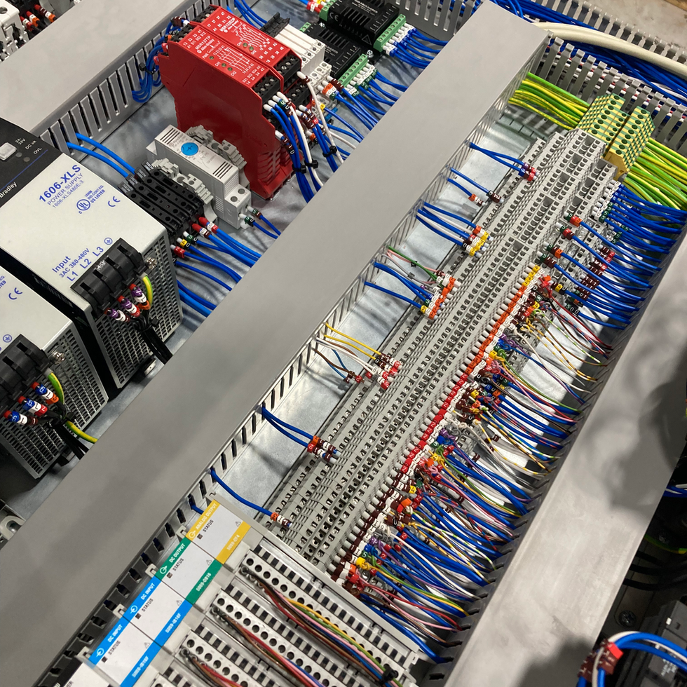
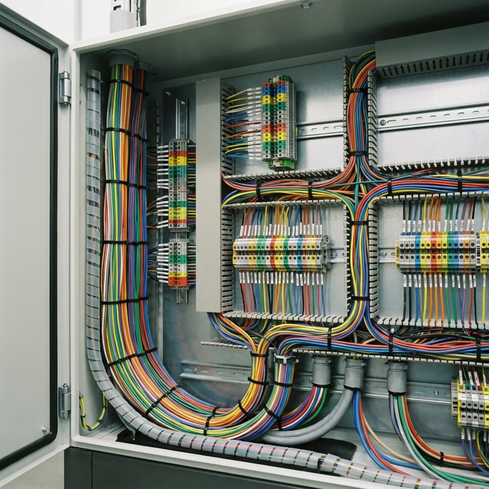
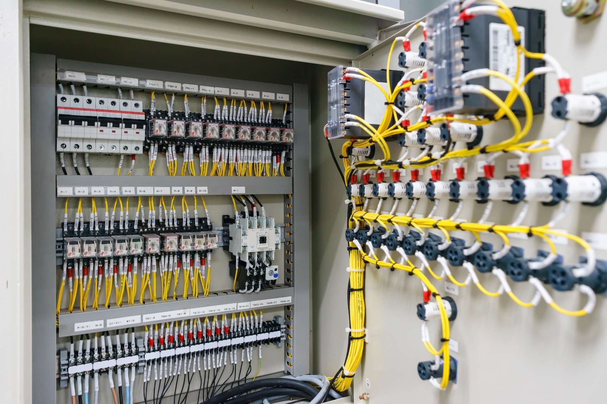

01↗
Automation Engineering
Control logic and motion integration for machine and production applications.
- PLC Programming & Project Execution
- Servo & Motion Control Integration

USIDIndustrial Automation WhatsApp an Engineer ↗USID Industrial Automation connects machines, control panels, production data and automation supply through one practical engineering partner.

Four practical capability areas covering automation engineering, industrial IT, panel manufacturing and automation supply.
Control logic and motion integration for machine and production applications.
Connect production equipment with usable operational data.
Clean, serviceable control panels built around the automation requirement.
Automation components and accessories for projects, panels and maintenance.
Real panel work presented with the engineering details that matter: wiring, components, accuracy, testing and commissioning readiness.

01 / 030.05 mm accuracy target, ferruled wiring, labelled IO and full FAT completed.

02 / 03Clean ducting, segregated power/control wiring and ready-for-site commissioning.

03 / 03Numbered ferrules, serviceable layout and continuity checks completed before dispatch.
One practical flow across engineering, panel work, automation parts and industrial integration.
Machine, production and panel requirements.
PLC, electrical and automation integration.
Panel manufacturing and system integration.
Testing, execution and site readiness.
Data logging, cloud connectivity and analytics.
One team for engineering, panel work, automation parts and industrial integration, reducing coordination effort for plant teams.
Focused on clear wiring, usable systems, dependable components and support that stays practical after commissioning.
Speak directly with our engineering team to review your machine specs, panel requirements, or site visit.
Shop No. -2, First floor, Opposite PNB Bank, Kasna, Greater Noida, G.B. Nagar, UP - 201312